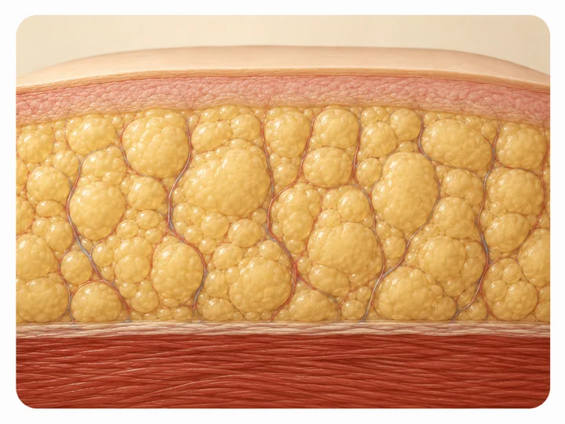

Prevención del lipedema: qué sí está en tus manos
Si tu mamá, tu tía o tu hermana tiene piernas con esa textura y esa pesadez típicas del lipedema, es normal preguntarte si a ti te va a pasar igual, y si hay algo que puedas hacer para que no te pase. La respuesta honesta tiene matices, y vale la pena conocerlos.

Vamos directo al punto, porque es justo lo que mereces saber: la prevención del lipedema, en el sentido de "haz esto y no te va a dar", no existe todavía. El lipedema tiene un origen genético y hormonal que no depende solo de cuánto cuides tu alimentación o cuántas lomas subas en Medellín. Pero eso no significa que no tengas ningún control. Hay varias cosas que sí dependen de ti.
Por qué la prevención del lipedema no es una fórmula exacta
El lipedema aparece casi exclusivamente en mujeres, y los estudios coinciden en que el componente hereditario es fuerte: distintas fuentes calculan que alrededor de 6 de cada 10 mujeres con lipedema tienen una madre, hermana o tía con piernas de características parecidas. Todavía no se ha identificado un único gen responsable, aunque hay investigación en curso explorando varios genes relacionados y posibles factores ambientales que podrían activarlos.
Los cambios hormonales también pesan bastante en cuándo aparece o cuándo empeora. La pubertad, el embarazo y la menopausia aparecen una y otra vez en las revisiones médicas como los momentos en los que el lipedema se nota por primera vez o avanza más rápido. Algunas pacientes también notan cambios con los anticonceptivos hormonales, aunque ahí la evidencia todavía es más preliminar.
Nada de esto depende de la fuerza de voluntad.
Lo que sí puede acelerar o agravar el lipedema
El sobrepeso y el sedentarismo no causan el lipedema, pero sí pueden acelerar su progresión y empeorar los síntomas. En eso coinciden las fuentes médicas consultadas. La inflamación de bajo grado parece influir en cómo se endurece el tejido graso con los años, aunque la ciencia todavía está terminando de definir ese mecanismo.
En Seravena preferimos hablar de manejo temprano y no de prevención, porque prometerte una fórmula que la genética no permite no te sirve de nada. Lo que sí te sirve es saber qué mirar y cuándo actuar.
Diagnóstico temprano: lo que sí puedes controlar en Medellín
Uno de los datos que más se repite en la literatura médica es el retraso en el diagnóstico: distintos estudios hablan de varios años, y algunos de hasta una o dos décadas, entre los primeros síntomas y el momento en que a una mujer le confirman que tiene lipedema y no solo sobrepeso. Ese tiempo perdido importa: identificarlo a tiempo permite manejar la inflamación y la sobrecarga del sistema linfático antes de que el tejido se vuelva más fibroso y duro de trabajar.
Si vives en Medellín, en el Valle de Aburrá o en otra parte de Colombia y sospechas que lo que tienes no es "solo peso", vale la pena pedir una valoración con alguien que sepa diferenciar el lipedema de la obesidad o de la retención de líquidos. En nuestro artículo sobre el diagnóstico de lipedema: cómo lo confirma el médico explicamos paso a paso qué revisa el médico y qué no hace falta para empezar a sospecharlo.
Hábitos que sí están en tus manos
Aunque no exista una fórmula para evitar que el lipedema aparezca, sí hay hábitos que pueden ayudarte a sentirte mejor y a frenar un poco la velocidad con que avanza. La alimentación antiinflamatoria y sostenida en el tiempo ayuda más que cualquier dieta estricta de corto plazo, como explicamos en dieta y lipedema: por qué la alimentación sola no basta.
- Movimiento de bajo impacto (caminar, nadar, bicicleta) para apoyar la circulación, sin buscar "quemar" el tejido lipédico.
- Compresión bien ajustada y usada a diario, que en muchos casos ayuda a controlar la hinchazón y la pesadez.
- Control del peso corporal dentro de un rango saludable, más como apoyo general que como tratamiento del lipedema en sí.
El ejercicio recomendado no es cualquiera: el fortalecimiento muscular suave y el ejercicio en agua se mencionan en consensos médicos recientes como opciones que ayudan con el dolor y la movilidad, como detallamos en ejercicio y lipedema: cómo moverte sin miedo y sin dolor. Si quieres ver el panorama completo del manejo del lipedema en nuestra consulta de El Poblado, puedes revisar nuestra página de tratamiento de lipedema en Medellín.
Para empezar, no necesitas cambiar toda tu rutina hoy mismo. Anota esta noche, antes de dormir, si tus piernas duelen al tacto, si los pies se te hinchan más al final del día que en la mañana, y si alguna mujer de tu familia tiene una forma de piernas parecida a la tuya. Llévalo escrito a tu próxima cita: ese detalle, más que cualquier dieta, es lo que de verdad ayuda a decidir si conviene pedir ya una valoración con eco doppler.
Preguntas frecuentes
¿Se puede prevenir el lipedema por completo?
No existe una forma garantizada de prevenir el lipedema, porque su origen combina genética y cambios hormonales que no se pueden controlar. Lo que sí puede ayudar es identificarlo temprano y manejar los factores que aceleran su progresión, como el sedentarismo o el sobrepeso.
¿El lipedema es hereditario?
Hay un componente hereditario importante: varios estudios señalan que buena parte de las mujeres con lipedema tienen una madre, hermana o tía con piernas de características similares, aunque todavía no se ha identificado un gen único responsable.
¿Bajar de peso evita que el lipedema avance?
Bajar de peso no elimina el tejido graso propio del lipedema, pero mantener un peso saludable y mantenerte en movimiento puede ayudar a reducir la inflamación y la velocidad con la que avanza, según el consenso médico actual.